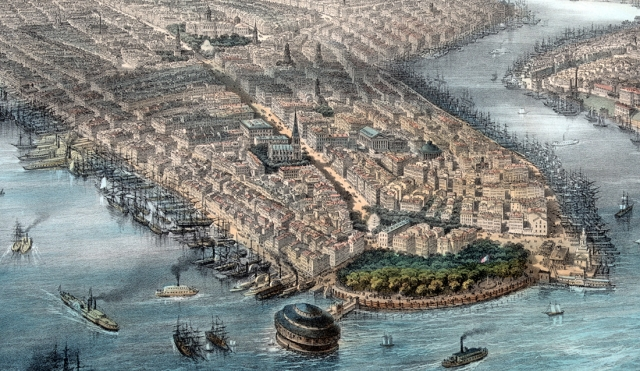
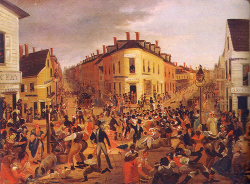

|
By the middle decades of the 19th century New York was
the biggest, wealthiest, and noisiest city in the United
States. One observer exclaimed after a visit to the City
that it "always kills me-dazzles, dizzies-astonishes,
confounds, and overpowers poor little me." New York City,
then, as now, was the financial capital of the country.
In 1850, a dozen years after the arrival of the first
transatlantic steamer out of Great Britain, New York City
was already handling one-half of the United States imports
and a third of its exports. Railways developed extensively
during the 1850s so that the city was handling more rail
tonnage than Philadelphia and Baltimore combined. The
|

Manhattan, the commercial center of New York,
pictured in an engraving from 1850.
|
extensive trafficking of goods created an upsurge in the
banking business; six hundred of the nation's seven hundred
commercial banks maintained permanent accounts in New York
to facilitate international transactions. Attracted by
investment capital, hundreds of brokerage houses opened in
New York City in the 1850s, helping to pull the stock market
out of depression.
Other ventures, such as insurance, prospered as well.
Seventy-one of the 95 New York City insurance companies
existing in 1860 were established in the previous decade.
New York became the fastest growing manufacturing center in
the world. In 1855, one of every fifteen people employed in
United States manufacturing worked on Manhattan Island.
Manhattan also became the nation's information center. As
terminus of the first transatlantic telegraph transmission
in 1858, New York City celebrated its position as link
between Old and New Worlds. The city's telegraph system was
used to link police stations, to coordinate train schedules,
and to set security prices for the nation via the Stock
Exchange. New York's journalists became particularly
dependent on the telegraph. They used it to collect news and
other information, and in the process transformed their
newspapers.
The booming city was home to both major national
political parties who headquartered in New York City in
order to have easy access to campaign contributors and
organizational talent. Of course, local politics were also
important in New York. William Tweed embarked on a fateful
political career in 1851. By 1869, he had risen through New
York City political channels to effectively control the city
and the state. If corruption reigned with Tweed's "machine"
so did reform movements flourish. Tweed's downfall in the
early 1870s was accomplished with the help of reformers and
crusading newspaper reporters.
Great wealth and great poverty dominated New York City's
landscape. The lavish mansions of families like the Astors
and the Vanderbilts were built on the most stylish street
in America, Fifth Avenue. Fashion was set in New York, where
fancy hotels boasted five hundred rooms and restaurants
hired French waiters. Theaters flourished between Union and
Madison squares along Broadway. Department stores also
graced Broadway Street, and middle and upper class women
shopped on the so-called "Ladies Mile" in the afternoons.
New York City was the place where the most influential
newspapers were published; it was also the center of the
book, journal and magazine publishing industry. By 1860, New
York dominated newspaper publishing, producing over 37
percent of the nation's publishing revenue with only 2
percent of the population.
Monumental cultural institutions such as the Metropolitan
Museum of Art and the American Natural History Museum were
established in the late 1860s and 1870s to enlighten and
bring pleasure to those so inclined. Beautiful Central Park,
the largest open-space park in the country, assumed its
modern form just after the Civil War.
New York's economy was tightly bound to Southern cotton.
The Civil War interrupted this commerce and in 1861 New York
experienced a panic. Democratic Mayor Fernando Wood, known
as a champion of workingmen, advocated a neutral position
for the City. Wood abandoned his suggestion in the wave of
patriotic fervor after Fort Sumter.
In fact, the mayor authorized loans to equip Union
recruits and to care for their dependents. Many of the
famed Union ethnic regiments originated in New York City.
Later, the City was the site of the draft riots that broke
out in July of 1863; it was the most deadly civil riot in
the country's history. Overall, New York City quickly
recovered from its loss of revenues from the South. The
|

The famous (and notorious) Five Points
neighborhood, home to many immigrants.
|
City's industrial output nearly outpaced that of the entire
Confederacy. The exuberance continued after the war as New
York City's growth and development exceeded every other city
in the United States.
Alongside the power and the glory, however, was the
reality of a teeming mass of immigrants whose lives were
restricted to hard work and poverty. New York City was the
entry to the vast majority of nineteenth century immigrants;
three of four European immigrants between 1840 and 1860
entered the country through Castle Island in the port of New
York. More than three million immigrants arrived in New York
City over that period, only one of every six remained in the
metropolitan area. Still, that meant an increase of
three-quarters of a million inhabitants.
Out of sight and mind to comfortable New Yorkers,
Irish-Americans, and members of other ethnic groups built
the infrastructure - trains, subways, bridges, and
skyscrapers - that sustained New York's remarkable economic
growth to the end of the 19th century. The Irish slums with
long muddy streets and little wooden shacks offered a stark
contrast to the ostentatious display of wealth in affluent
neighborhoods. Homeless children lived in slums alongside
the beggars, drifters, thieves and prostitutes of the most
notorious and crime-ridden wards (local government units) of
New York.
Even for the wealthy, New York City streets had a
distinctly unpleasant side, as manure from the endless
parade of horse drawn carriages, street-cars, and delivery
wagons was deposited by the tons on the streets, the odor
pervasive. Despite its drawbacks, New York City became the
magnet for ambitious people from all over the country, and
indeed the world.
Source: Joan Waugh, ed., Facts on File Encyclopedia of American
History: Civil War and Reconstruction, 1856 to 1869 (New York: Facts on
File, 2003), 253-254.
|